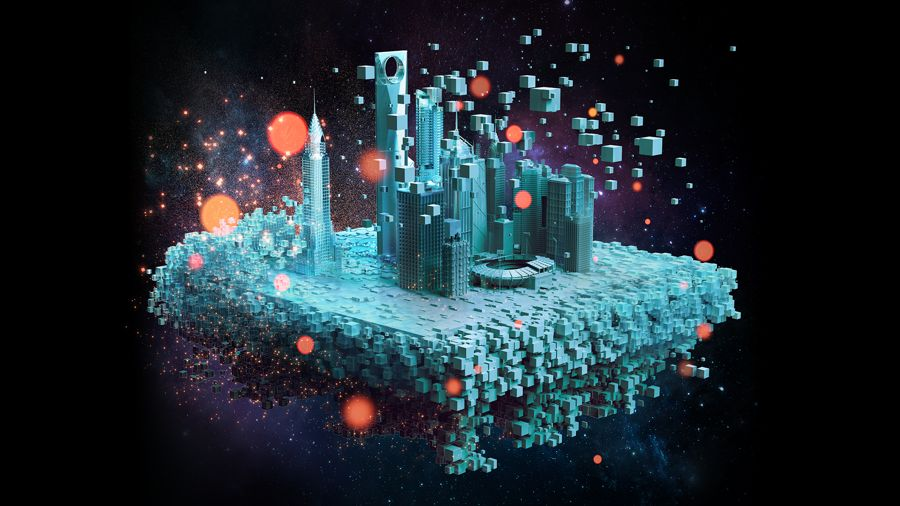

I started as a 3D character artist in games and kids TV, taught the next generation of artists at Full Sail, and now lead creative on a global stage. I direct, write and animate, and I still get my hands in the work. I like *telling stories*: taking snippets of ideas and making them full fledged global campaigns.
MMichelle Palinkas Global Creative Manager, Corning Optical Communications
03 Impact
By the numbers
EXPERIENCE
+
Years in 3D, animation, film and brand.
AWARDS
Industry awards for The Optical Frontier: a Gold ADDY and two Silver Tellys.
FILM
K
Views and counting for the GlassWorks AI launch film I directed.
BRANDS
Big name brands: Corning, ESPN, Electronic Arts and PBS.
04 Selected work at Corning
Big ideas, shipped
Campaigns, films and concepts from my time leading Creative Services for Corning Optical Communications.

01 / 08Film · Director and writer
The Optical Frontier
A film about the future of fiber for Corning's 2025 Kickoff Conference. Winner of a Gold ADDY and two Silver Telly Awards.
Wrote the script and directed the team. Animated a few animatic shots that the team then refined.
GlassWorks AI launch film
02 / 08Launch campaign
GlassWorks AI
Art, logo, launch film and interactive Ceros module for Corning's AI infrastructure launch, carried through events in the US and Europe. The film has passed 170K views on YouTube.
Led the creative. Directed and storyboarded the launch film.
03 / 08Annual campaign
12 Days of Data Center
A holiday series that turns data center products into twelve days of story, back every year.
Directed the team every year. Created more than half of the 2025 imagery myself.
04 / 08Concept · Compositing
Neural Network
A visual metaphor for how fiber feeds AI, created when AI was still in its infancy.
Original concept. Nearly 50 hand painted layers went into the brain image alone.
05 / 08Campaign · Compositing
Bring Broadband Home
A 2023 to 2024 campaign showing what broadband makes possible for real families, students and patients.
Original concept. Hand composited in Photoshop.
FiberVision launch film
06 / 08Product launch film
FiberVision
Power and bandwidth where you need it: security and smart building connectivity, made easy to understand.
Originated the idea and directed the video.
FlexNAP Process
07 / 08Technical film
FlexNAP Process
A step by step look at how FlexNAP systems are built, drawn with engineering level accuracy.
Developed the production process, directed, and checked every drawing for technical and brand accuracy.
MMC Connector film
08 / 08Product film
MMC Connector with PRIZM TMT Ferrule
A product film for one of Corning's high density connectors.
Co-directed and established the visual style.
05 Inside the film
The Optical Frontier
Twelve worlds, one thread of light. Scroll through the frames of the film I wrote and directed.
01/ 12
06 Annual campaign
12 Days of Data Center
Every holiday season I direct the team behind twelve days of product stories. In 2025 I created more than half the imagery myself, using Illustrator, 3D and AI.
Two campaigns I conceived and composited myself in Photoshop, before generative AI was part of the toolkit.
Neural Network
AI doesn't work without fiber
Created when AI was still in its infancy, long before image generators could do the work. Nearly 50 hand painted layers went into the brain image alone. The series ran across social and event graphics.
Bring Broadband Home · 2023 to 2024
Invest in their future
Every image places a moment broadband makes possible, a birthday call, a classroom, a checkup, inside the everyday world around it.
08 Experience
Two decades, one thread
From modeling characters for EA to leading a global brand studio, the work has always been about making complex things beautiful and easy to understand.
Lead Creative Services for a portfolio of about 250 products, driving global brand consistency across film, 3D, design and trade show experiences.
Direct and mentor a global team of 40+ creative staff, contractors and vendor partners across the US, Poland and Mexico.
Wrote and directed The Optical Frontier, leading the production team and animating early animatic shots. Winner of a Gold ADDY and two Silver Telly Awards.
Led the GlassWorks AI launch from art and logo to film and interactive experience. The launch film has passed 170K views.
Delivered creative for the Bring Broadband Home campaign launch, 2023 to 2024.
Guided the renders and animation for the global launch of Next Gen FlexNAP and Multifiber Pushlok.
Partnered with engineering to build a rendering pipeline that reuses product design data, bringing consistent product imagery to market faster.
Brought real time rendering and AI tools into the studio, cutting production time while raising quality.
Senior Multimedia Specialist
Corning Optical Communications
Dec 2018 · Oct 2021
Created 3D renders, animation, motion graphics, product demonstration videos and interactive experiences that advanced the brand globally.
Designed 10+ interactive web experiences, including a 3D rotating interactive trade show booth during the pandemic.
Built an automation tool for 3D fiber modeling that cut production time by 50%, an early step in the studio's pipeline efficiencies.
Standardized product renders with a shared KeyShot studio and trained external vendors on materials, lighting and setup.
Directed voice talent and shot product and event photography for marketing campaigns.
Course Director, 3D Character Design
Full Sail University
May 2011 · Oct 2017
Designed and taught the Character Design and Creation curriculum in Maya and ZBrush, selected for my industry background in games and film.
Guided 40 to 50 students a month through an accelerated program and mentored two lab specialists.
Created a live lecture format for online students, recognized by the Head of Online Learning.
Partnered with a developer on a grading tool that cut grading time from days to 2 to 3 hours.
Assistant Art Director
ESPN
Oct 2012 · Oct 2013
Directed a team of three 3D modelers creating 3D printed set models for broadcast design.
Worked with directors and producers to align every set with production goals and timelines.
Where it started
Games, TV and studios
2003 · 2013
Maya GeneralistOutpost 21 Studios2013 · CG robot for print and billboard ads
Creative directionVideo directionVisual storytellingCreative strategyBrand identityBrand governanceMarketing campaignsProduct photographyGlobal team leadershipCoaching and mentoringBudgets and vendor managementProduction pipelinesWorkflow automationTrade show design
Education
BS, Computer AnimationFull Sail University
AS, Computer AnimationFull Sail University
AAValencia College
Recognition
Gold ADDY AwardThe Optical Frontier, 2026
Silver Telly Award × 2The Optical Frontier, 2025
11 Contact
Let's makesomethingwith teeth.
Open to creative leadership roles, remote first. Based in New Smyrna Beach, Florida.